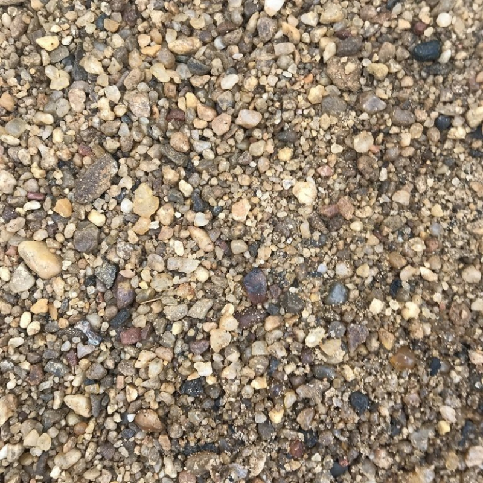
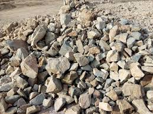
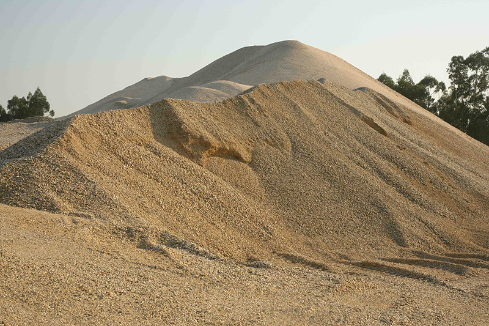

AGREGADOS

Piedra de Zanja
Es un material de construcción triturado, con tamaños que oscilan entre 10 y 20 mm.
Ver Detalles

Arena Gruesa
Es un agregado de partículas de mayor tamaño, generalmente entre 2 y 4.75 mm.
Ver Detalles
Piedra Chancada
Es un agregado triturado de rocas, con tamaños que varían generalmente entre 1 y 25 mm.
Ver Detalles

Piedra de Cajon
Es un material de construcción que consiste en rocas de tamaño grande, generalmente entre 10 y 30 cm.
Ver Detalles

Arena fina
Es un material granular con partículas de menor tamaño, generalmente menores de 2 mm.
Ver Detalles
Hormigón
Es un material de construcción compuesto por una mezcla de cemento, agua, agregados (arena y grava) y, a veces, aditivos.
Ver Detalles